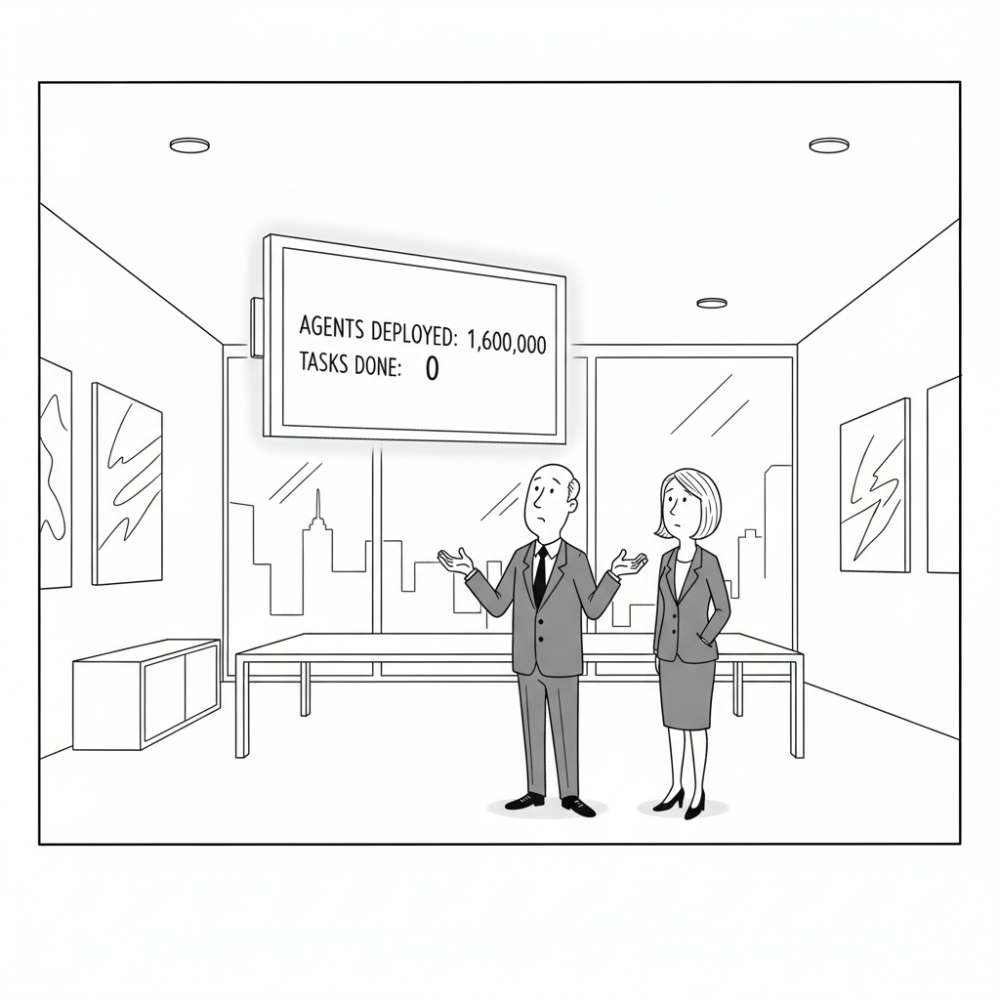

Your daily AI news digest
AI the News That's Fit to Prompt

GPT-5.6 Sol Ultra Cracks a 50-Year-Old Math Conjecture
OpenAI's largest new model, GPT-5.6 Sol Ultra, generated a machine-verified proof of the Cycle Double Cover Conjecture, a graph-theory problem open since the 1970s, in under an hour by spinning up 64 parallel subagents. The proof leans on the 8-flow theorem and linear algebra over GF(3) to reduce the problem, and OpenAI has published the full proof for scrutiny.
The caveat is the story. A machine-verified proof is not a peer-reviewed one: mathematicians still have to read the reasoning, not just confirm the logic checks out. Independently posed by George Szekeres in 1973 and Paul Seymour in 1979, the conjecture has resisted human attack for half a century, which makes an under-an-hour result either a landmark or a claim awaiting its asterisk. Either way, it lands on the same launch day as the rest of the GPT-5.6 family.

A Model Explosion: GPT-5.6 Sol, Grok 4.5 and Meta Muse
AI Explained maps a single frantic week in which GPT-5.6 Sol, Grok 4.5, and Meta's Muse all shipped, and sorts the real capability gains from the launch-day noise. Watch the full study guide.

"They all registered in the first ten minutes. Then they formed a committee."

1.6M Agents Registered for OpenClaw and Did NOTHING
Nate B. Jones digs into why 1.6 million agents registered for OpenClaw and accomplished almost nothing, and what the flop reveals about the gap between agent hype and agent reliability. Watch the full study guide.

Meta Removes Controversial Instagram AI Feature After Backlash
Meta disabled a Muse Image feature that let users generate images by @-mentioning public Instagram accounts without notice, admitting within days that it "missed the mark" after users and talent agencies pushed back.

Apple Sues OpenAI Over Alleged Trade Secret Theft
Apple's federal suit accuses former employees now at OpenAI, including hardware chief Tang Tan, of taking confidential designs for unreleased products, escalating the fight over OpenAI's nascent hardware business.

GPT-5.6 and the New Super App Are a Massive Leap
Matt Wolfe runs through the week's biggest launches, arguing GPT-5.6 plus a new super app add up to a genuine leap, with hands-on demos to back the claim. Watch the full study guide.

Building the Future of Agentic Infrastructure
Anthropic engineers walk through the plumbing behind reliable agents, from tool orchestration to the guardrails that keep long-running work on track. Watch the full study guide.

OpenAI is so back... GPT-5.6 Sol First Look
Fireship's rapid-fire first look at GPT-5.6 Sol, cutting through the launch hype in five dense, sardonic minutes. Watch the full study guide.

OpenAI Just Rebuilt ChatGPT
The AI Advantage breaks down how OpenAI rebuilt ChatGPT around GPT-5.6, and what actually changes for the way everyday users get work done. Watch the full study guide.
Nilay Patel on the Privacy Price of AR Glasses
Willison spotlights Nilay Patel's argument that the "next big platform" requires a camera recording everything you see and streaming it to the cloud: to build it, "you are going to have to invade people's privacy."
Read It Yourself: The Cycle Double Cover Proof
The machine-verified proof document itself, using the 8-flow theorem and linear algebra over GF(3). A rare chance to look past the headline and read exactly what the model produced.